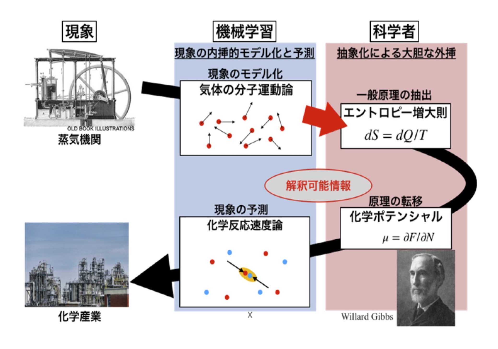

本武研究室HP
本武研究室HP
|
 |
経歴
学歴
| 2008年3月 | 東北大学 | 理学部 | 物理学科 | 卒業 |
| 2010年3月 | 北海道大学大学院 | 理学院 | 宇宙理学専攻 | 修士課程修了 |
| 2013年3月 | 東京大学大学院 | 総合文化研究科 | 広域科学専攻 | 修士課程修了 |
| 2016年3月 | 東京大学大学院 | 総合文化研究科 | 広域科学専攻 | 博士課程修了 |
職歴
| 2016年4月〜2019年3月 | 東京大学大学院 | 新領域創成科学研究科 | 特任研究員： | 岡田真人研究室でデータ駆動科学に関する研究に従事 |
| 2019年4月〜2022年12月 | 統計数理研究所 | 統計的機械学習研究センター | 特任助教： | 福水健次研究室で統計的機械学習に関する研究に従事 |
| 2023年1月〜 | 一橋大学 | ソーシャル・データサイエンス研究科 | 准教授： | 解釈可能AIによるデータ駆動科学に関する研究に従事 |
教育歴
| 2024年8月 | 中央大学大学院 理工学研究科 | 非常勤講師 | 「物理学特別講義」 | |
| 2023年8月 | 福岡大学大学院 理学研究科 | 非常勤講師 | 「物理情報計測特別講義」 | 講義資料 |
| 2021年10月〜 | 一橋大学 | 非常勤講師 | 「AI入門」 | |
| 2021年4月〜2022年9月 | 立教大学 | 非常勤講師 | 「データサイエンス実習」 | |
| 2020年4月〜2020年7月 | 筑波大学 | 非常勤講師 | 「数理科学１（微分・積分学）」 | |
| 2019年9月〜2023年3月 | 成城大学 | 非常勤講師 | 「データサイエンス応用」「データサイエンス・アドバンスド・プログラム」 |
受賞歴
| SWARM2019: The 3rd International Symposium on Swarm Behavior and Bio-Inspired Robotics, Best Paper Award Finalists | |
| Takayuki Niizato, Kotaro Sakamoto, Yoh-Ichi Mototake, Hisashi Murakami, Yuta Nishiyama, Toshiki Fukushima | （2019） |
| 東京理科大学・脳学際研究部門第1回公開シンポジウム 最優秀発表賞 | （2017） |
| 日本人工知能学会全国大会 2016 Annual Conference Award | （2016） |
| SWARM 2015: The First International Symposium on Swarm Behavior and Bio-Inspired Robotics, Best Student Paper Award Finalists | （2015） |
競争的資金等
| 「位相的データ解析による階層構造をもつ大規模群れ運動の縮約モデリングとその応用」 |
| 学術変革（公募研究）（No.xxxxx）研究代表 |
| 期間：2025-04-01 〜 2027-03-31 |
| 「磁場閉じ込めプラズマの勾配急峻領域における運動論的乱流現象の総合的研究」 |
| 基盤B（No.xxxxx）分担 |
| 期間：2025-04-01 〜 2030-03-31 |
| 国立研究開発法人科学技術振興機構 戦略的創造研究推進事業（CREST）（No.JPMJCR2431）主たる共同研究者 |
| 「マルチモーダル計測に基づく光機能デバイスのマルチスケールダイナミクス解析」 |
| 期間：2024-10-01 〜 2029-03-31 |
| 基盤A 分担 |
| 「機械学習的宇 宙構造論: 構造形成から銀河進化へ」 |
| 期間：2024-04-01 〜 2029-03-31 |
| 挑戦的研究（萌芽）分担 |
| 「計算トポロジ ーを活用した アクティブマ ター集団の誘 導的自己組織 化の構築」 |
| 期間：2024-08-07 〜 2026-03-31 |
| 基盤B 分担 |
| 「幾何学的データ解析手法の開発と位相的データ解析への展開」 |
| 期間：2023-04-01 〜 2028-03-31 |
| 「革新的セラミック材料設計のための材料パターン情報学の創成」 |
| 国立研究開発法人 新エネルギー・産業技術統合開発機構(NEDO)未踏チャレンジ2050（22100843-0)研究代表 |
| 期間：2022-08-01 〜 2025-07-31 |
| 「パターンダイナミクスの未知対称性を発見するための機械学習手法の開発」 |
| 若手研究（No.22K13979）研究代表 |
| 期間：2022-04-01 〜 2027-03-31 |
| 「解釈可能AIによるパターンダイナミクスの数理構造抽出と材料情報学への応用」 |
| 国立研究開発法人科学技術振興機構 戦略的創造研究推進事業（さきがけ）（No.JPMJPR212A）研究代表 |
| 期間：2021-10-01 〜 2025-3-31 |
| 「トポロジカルデータ分析によるパターン形成過程の縮約モデル構築」 |
| 新学術領域研究(研究領域提案型)（No.20H04648）研究代表 |
| 期間：2020-04-01 〜 2022-03-31 |
| 「TDAによる強磁性体磁区パターン形成過程の分析」 |
| 統計数理研究所共同利用(一般研究２)（No.2020-ISMCRP-2069） |
| 期間：2020-04-01 〜 2021-03-31 |
| 「代数幾何的学習理論の物理データ分析への応用手法の検討」 |
| 統計数理研究所共同利用(一般研究２)（No.2020-ISMCRP-2070） |
| 期間：2020-04-01 〜 2021-03-31 |
連絡先
| 所属：一橋大学 ソーシャル・データサイエンス研究科（本武研究室） |
| 住所：〒186-8601 東京都国立市中2-1 東本館227号室 |
| 電話：042-580-9222（直通） |
| E-mail : y.mototake-at-r.hit-u.ac.jp |